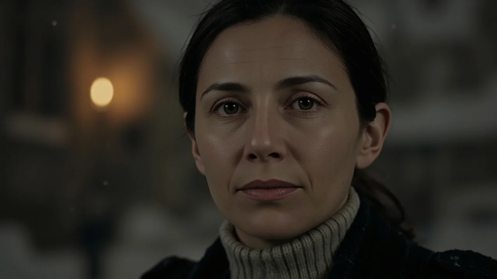
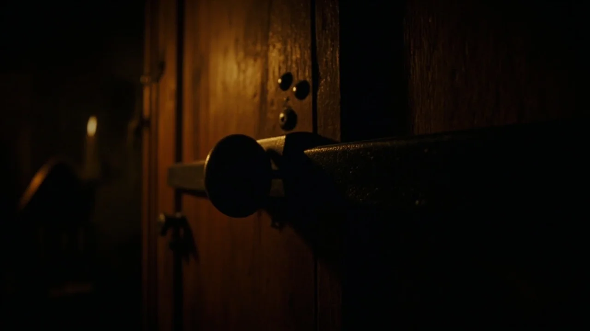
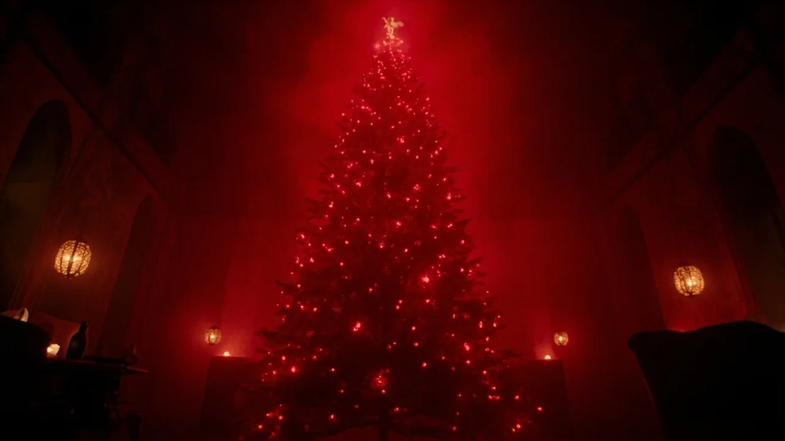
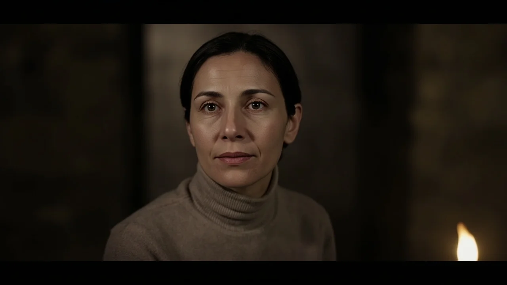
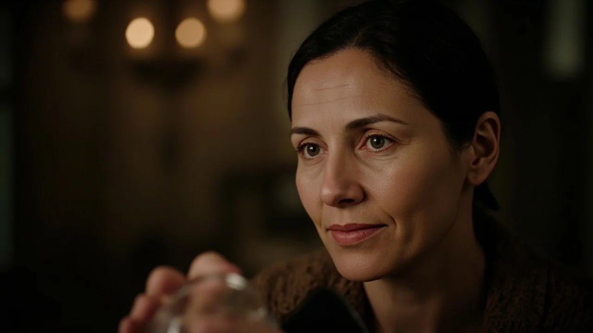

El portón de roble chirrió sobre sus goznes con un quejido largo. La ventisca de la sierra arrojaba aguanieve contra Los Acebos, un caserón macizo encajado en un repliegue del valle. Clara bajó del coche frotándose los brazos sobre el jersey gris perla, mientras David descargaba del maletero las maletas y los anoraks de los niños, Lucas y Emma, que señalaban la chimenea humeante.
En el umbral, con una linterna apagada y un chal negro a los hombros, los esperaba la señora Valdés. Sus sesenta y ocho años pesaban en una espalda rígida y unos ojos grises que no pestañearon al mirarlos.
—Llegan tarde —dijo la anciana, entregando una llave de latón sin saludar—. La caldera ya ha templado la planta baja. La leña está en el soportal.
—El puerto estaba impracticable —se disculpó David con una sonrisa forzada.
La mujer no contestó. Los guio por un vestíbulo con vigas ennegrecidas hasta el salón. La estancia era imponente: muros de piedra vista, lumbre crepitando en el hogar y un sofá de cuero ajado. Pero lo que imantó la mirada de Clara fue el abeto del rincón: un árbol artificial de tres metros con ramas rígidas desvaídas por las décadas, cuajado de guirnaldas de estaño mate, bolas de cristal soplado y figuras de celuloide. Olía a polvo seco y naftalina.
—La casa se alquila con una sola norma —dijo la señora Valdés, clavando la vista en Clara—. No toquen el árbol. No descuelguen ni un solo adorno, por tosco o desagradable que les parezca. Esta casa tiene sus costumbres en Nochebuena.
Lucas estiró la mano hacia una campanilla de bronce sujeta a una rama, pero Clara le apartó los dedos.
—Por supuesto. No nos acercaremos.
La anciana asintió despacio y salió sin despedirse. El portón se cerró con un golpe seco, dejando tras de sí el bramido del viento y el chasquido del fuego.
La primera noche discurrió con un espejismo de calma. Cenaron sopa caliente y embutidos, los niños cayeron rendidos en la buhardilla y David descorchó vino junto a la chimenea. Hacia las once, Clara bajó a la cocina por agua. La casa crujía con lentitud. Al cruzar el salón, la lumbre moribunda recortaba el árbol en la pared. Entre las ramas distinguió un adorno que no había visto por la tarde: una pequeña jaula de alambre con un hueso diminuto dentro. Sintió una sacudida fría en la nuca, pero se obligó a atribuirlo al cansancio y subió a la cama.
La mañana del veinticuatro amaneció con un silencio absoluto. Medio metro de nieve fresca sepultaba el valle. Al bajar al salón para preparar café, Clara se detuvo en seco.
Bajo las ramas del árbol descansaban cuatro paquetes rectangulares.
Eran envoltorios de papel amarillento atados con cuerda basta. No estaban allí la noche anterior. Clara se arrodilló con el pulso desbocado. El papel estaba gélido al tacto. Sobre cada uno figuraba una etiqueta de cartón con caligrafía antigua:
*David — 14 de marzo de 2031* *Clara — 02 de noviembre de 2028* *Lucas — 19 de agosto de 2084* *Emma — 06 de febrero de 2091*

—¿David? —llamó ella con un hilo de voz—. David, baja ahora mismo.
Su marido bajó frotándose los ojos. Al ver los paquetes, torció el gesto.
—¿Qué es esto? ¿Los trajiste tú anoche?
—Míralos —susurró ella—. Tienen nuestros nombres y fechas.
David leyó las etiquetas y soltó un bufido de desdén.
—Es una broma macabra de la vieja. Alguna costumbre rural para asustar a los forasteros.
—El cerrojo de hierro está echado por dentro, David. Nadie ha entrado de madrugada.
David cortó la cuerda del paquete que llevaba su nombre y abrió la caja de terciopelo azul que había dentro. Un reloj de pulsera devolvió el reflejo de la penumbra: la esfera estaba reventada en telaraña y la correa de cuero carbonizada. Las manecillas de acero estaban clavadas en las tres y diecisiete.
David palideció de golpe. Sus dedos empezaron a temblar.
—¿De quién es ese reloj? —preguntó Clara.
—Mío —musitó él—. Lo perdí hace cuatro años.
—¿Cuándo? Jamás te lo he visto puesto.
David tragó saliva sin mirarla a la cara.
—La noche del temporal en la autopista. Cuando te dije que el coche patinó y pasé la noche en un hostal. No fue así. Choqué de frente contra la bionda de un puente a las tres y diecisiete. Había bebido en la cena de empresa y me dormí. Rompí el reloj y lo tiré a una cuneta para que el seguro no hiciera preguntas.

Clara lo miró aturdida.
—¿Me mentiste cuatro años sobre un accidente así?
—No quise preocuparte. Ya tenías bastantes problemas entonces —murmuró él, bajando los ojos.
Se oyeron pasos en la escalera. Para no alarmar a los niños, Clara abrió deprisa su propia caja. En el fondo halló un portafotos con una imagen descolorida. Mostraba a ella misma con diez años en el patio del colegio, de la mano de una mujer cuyo rostro había sido raspado con una cuchilla hasta dejar la fibra blanca del cartón.
Clara se llevó los dedos a los labios. Reconocía aquel patio, pero nunca se había tomado esa foto. La mujer sin rostro vestía el abrigo de paño que su madre llevó la mañana que la abandonó en la estación.
—¡Papá, mira! —exclamó Lucas, abriendo su caja con Emma a su lado.
El paquete de Lucas contenía un muñeco de pino tallado con su misma cicatriz sobre la ceja; el de Emma, una muñeca idéntica a ella con trenzas de hilo y vestido rojo. Los niños rieron fascinados. Lucas colocó su figura sobre el zócalo de la chimenea. Clara observó la talla con pavor: el muñeco tenía los brazos caídos, pero al pestañear, vio que ahora tenía el brazo derecho alzado, apuntando con rigidez hacia la escalera.
La tarde cayó espesa como una mortaja. Clara procuró entretener a los niños en la cocina amasando galletas, pero la vivienda entera crujía con quejidos soterrados. Las cañerías vibraban en un tono áspero y los cuadros parecían ladearse cuando nadie los miraba. David intentó arrancar el coche, pero las ruedas patinaron sobre el fango helado. El teléfono seguía sin cobertura.
A las ocho, mientras la nieve volvía a castigar los cristales, comenzó la música.
Eran acordes quebradizos de villancicos tocados en una pianola desafinada, acompañados por un coro de voces infantiles que manaba tras la puerta cerrada de la buhardilla. Los niños se quedaron quietos, con las cucharas suspendidas sobre la mesa.
—¿Quién canta arriba? —preguntó Emma, encogiéndose en la silla.
David cogió el atizador de la chimenea y salió al pasillo. Clara fue tras él con los pequeños. En el suelo de tarima descubrieron una hilera de huellas de barro y agujas de pino secas que nacían en la escalera y morían bajo el abeto artificial.
—¡Se acabó esta farsa! —gritó David.
Soltó el hierro, se abalanzó sobre el árbol y agarró el tronco con las dos manos para arrancarlo de cuajo. Tiró con toda su fuerza, doblando las rodillas.

El árbol no se movió un milímetro. Sus ramas se sacudieron con una vibración violenta que recorrió las paredes. Las guirnaldas tintinearon como cascabeles fúnebres y las luces se encendieron de golpe con un brillo carmesí cegador. Una corriente de aire glacial sofocó el fuego de la chimenea.
Por el altavoz del interfono de la pared sonó un chasquido agudo, seguido de una voz infantil y monocorde:
—*La familia aún no ha abierto el regalo más importante.*
El altavoz calló. En el hueco que David acababa de dejar libre, apareció un quinto paquete envuelto en papel amarillento.
Era una caja pequeña, de la medida exacta de un calzado de recién nacido.
Clara sintió que las piernas le fallaban. Caminó hacia el árbol con pasos torpes, devorando la caligrafía de la etiqueta:
*Mateo — 18 de mayo de 2021*
David se acercó por detrás, desencajado.
—¿Quién es Mateo? Clara, ¿de quién es ese nombre?
Clara se arrodilló. Con manos temblorosas retiró la cuerda y abrió la caja. Sobre un lecho de gasa reposaba un zapatito de lana blanca, tejido a mano, con un botón de nácar en la tira.
Un sollozo desgarrado brotó de su garganta.
—Era el nombre que le iba a poner —dijo Clara, con la voz rota—. Cuando perdí el embarazo al quinto mes, tú estabas en Fráncfort cerrando la refinanciación de la empresa. Me dijeron en el hospital que el corazón se había parado tres días antes. Fui a una tienda, compré este par de zapatitos y guardé uno en el fondo de mi joyero. Nunca te lo dije.
David dio un paso atrás, como golpeado en el pecho.
—¿Por qué me lo ocultaste? —preguntó con los ojos empañados.

—¡Porque cuando volviste ni me preguntaste cómo me encontraba! —gritó ella, levantándose entre lágrimas—. Llegaste hablando de tus préstamos, de salvar la casa. Me mirabas como si mi pena fuera un estorbo para tus planes. Llevo tres años pensando que habías dejado de quererme, que te alegrabas de no tener otro hijo.
—¡Eso no es verdad! —estalló David, quebrando su voz—. ¡Jamás me alegré! ¡Llevo tres años hundiéndome en la culpa porque pensé que la culpa fue mía por dejarte sola con las obras y el estrés! ¡Te culpé en secreto para no mirarme al espejo y admitir que fui un cobarde que huyó al extranjero porque tenía pánico a ser padre otra vez!
Sus reproches retumbaron en la estancia como un cristal al romperse.
En ese instante, desde la planta alta, sonaron los gritos de los niños:
—¡Mamá! ¡Papá! ¡La puerta no se abre! ¡Hay alguien debajo de la cama!
Clara y David corrieron hacia la escalera, pero una fuerza opresiva los empujó en direcciones contrarias. En el pasillo superior, las sombras se dilataron formando siluetas grotescas. La voz de Lucas parecía llegar de la buhardilla norte, mientras el llanto de Emma resonaba en el ala sur.
La casa buscaba separarlos, alimentándose del rencor acumulado en sus años de silencio.
David se frenó en mitad del corredor con el pecho agitado. Vio a Clara tambalearse hacia la buhardilla, alargó el brazo con desesperación y la agarró de la muñeca.
—¡No nos separamos! —bramó él, mirándola con firmeza—. ¡Escúchame, Clara! ¡No nos separamos! Da igual lo que hayamos callado. He sido un estúpido y un cobarde, pero te quiero. Eres mi mujer y no voy a dejar que esta casa nos rompa.
Clara lo miró a través del llanto. Reconoció en sus ojos la misma herida abierta y el mismo terror que la consumían. Se arrojó a su pecho y lo abrazó con una fuerza salvaje, escondiendo el rostro en su cuello.
—Yo también te quiero, David —sollozó—. Perdóname por haber guardado silencio.
Al fundirse sus palabras en el abrazo, un crujido monumental estremeció los cimientos de la casona.
La música del interfono enmudeció. El resplandor rojo del salón se apagó con un chasquido seco y las luces eléctricas volvieron a brillar con su tono cálido habitual. La puerta de la habitación infantil se abrió de par en par y los dos niños salieron corriendo por el pasillo para aferrarse a las piernas de sus padres.
—Nos vamos ahora mismo —dijo David con serenidad rotunda.

No hicieron equipaje. David cargó a Emma en brazos y Clara tomó de la mano a Lucas, que llevaba apretado en el bolsillo su muñeco de madera, ahora completamente inerte. Al cruzar el salón, Clara vio que los paquetes amarillentos habían desaparecido bajo el abeto. Solo quedaba el zapatito de lana sobre la alfombra. Se agachó, lo cogió y lo guardó en el bolsillo del abrigo.
El portón cedió sin esfuerzo. El coche arrancó al primer intento y sus ruedas abrieron rodadas en la nieve virgen, alejándose por la pista antes de que clareara la mañana de Navidad.
Pasaron cuatro meses antes de que la rutina cicatrizara sus vidas en el piso de la ciudad. La primavera llenó de flores los parques y los domingos se convirtieron en largas sobremesas donde Clara y David aprendieron a hablar sin reservas.
A mediados de abril, el cartero entregó un paquete alargado, precintado con cinta marrón y sin remitente.
David lo abrió sobre la mesa del comedor. En el interior, envueltos en el mismo papel basto de Los Acebos, estaban los cuatro regalos originales: el reloj quebrado, la fotografía de infancia con el rostro raspado y las dos tallas de madera.
Se miraron en silencio.
—Voy a encender la chimenea —dijo Clara con calma.
Prendió unos sarmientos en el hogar del salón. Uno tras otro, arrojaron los objetos al fuego: primero las figuras, luego la foto y al final la correa de cuero y los papeles. La madera ardió con un silbido azulado y una humareda blanca que el tiro absorbió de inmediato.
Clara contempló cómo todo se reducía a ceniza gris. Pero justo antes de extinguirse la última brasa, la llama dibujó la silueta cónica de un abeto y desde el tiro brotó un susurro tenue, como agujas de pino arrastradas por el viento:
—*Todavía falta uno.*
Clara sintió una sacudida interna, pero David la rodeó con su brazo y la apretó contra sí, contemplando los rescoldos hasta que solo quedó carbón frío.
Ocho meses después, en la víspera de la siguiente Nochebuena, montaron el árbol en su salón: un pino natural y fragante, decorado con luces doradas y cadenas de cartulina de los niños.
Cuando los pequeños ya dormían y Clara se disponía a apagar las luces, un destello en la copa le llamó la atención.
Se aproximó despacio, apartando las ramas verdes.
Allí, suspendido de un hilo de plata que nadie recordaba haber colgado, brillaba un adorno nuevo: un diminuto zapatito de bebé, tallado con delicadeza en cristal puro, que devolvía la luz dorada como una pequeña lágrima luminosa. Clara alargó la mano, acarició el cristal frío con la yema del pulgar y, en lugar de miedo, sonrió en la penumbra antes de apagar la luz.